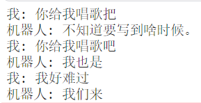

这个模型可以用于生成中文文本。
我已经上传了该模型使用的数据集，你可以在 kaggle 上下载这个数据集。
该数据集包含超过50万个中文对话，但是它并不是一个很好的数据集，它的规模有点小，且对话质量不是很高，因此训练出的模型效果很有限。
我同时上传了这个模型对应的代码，你可以在: 这里查看代码，如果你想本地化训练，可能需要对代码进行一定的改动，不过基本只需要对依赖关系上进行轻微改动。
对于这个模型来说，如果你的电脑有一个大于 2GB显存的显卡，那就可以进行愉快的训练。
我这同时有一个更大一点的模型，这个模型是基于： gpt2-chinese-cluecorpussmall进行的调整。
更大的模型在这里。
如果你有一块显存超过 16GB 的大玩具，就可以在本地进行愉快的训练。